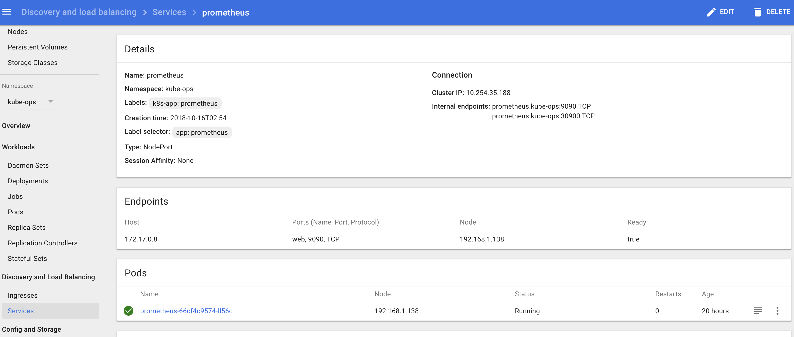
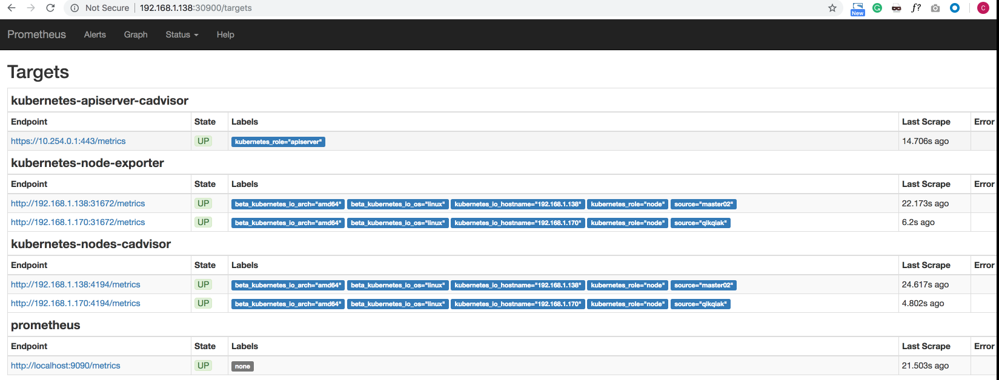
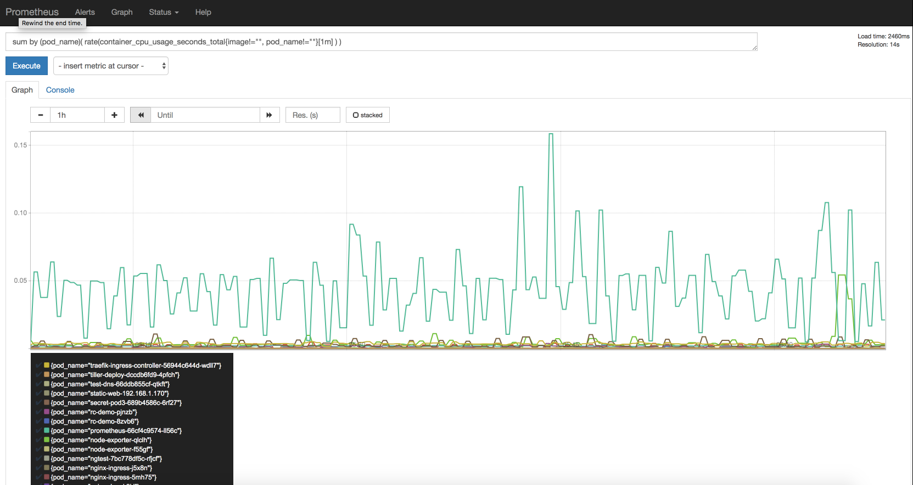
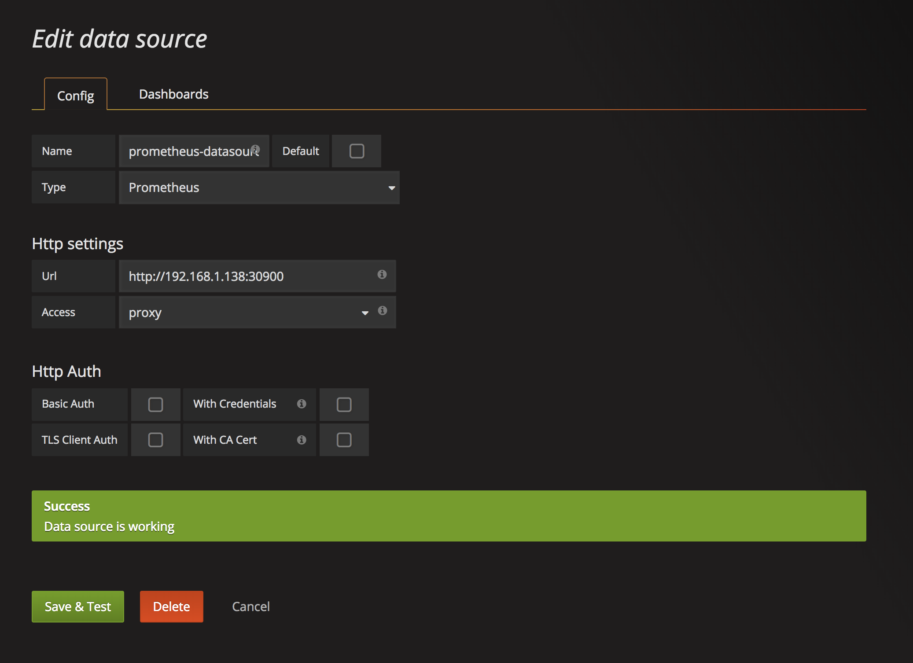
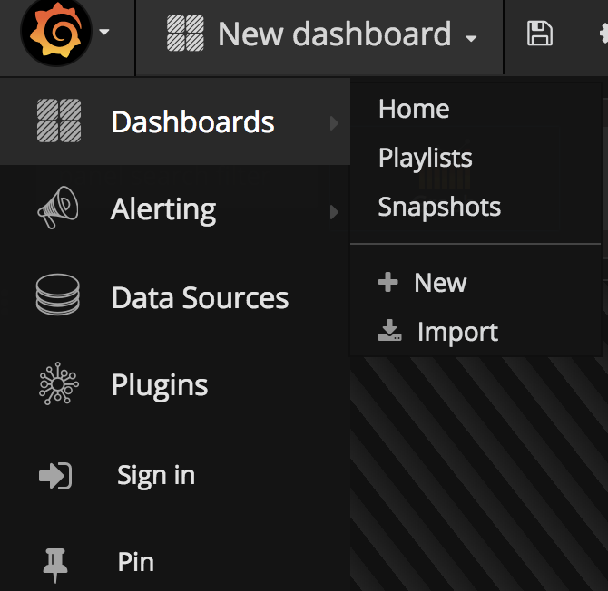
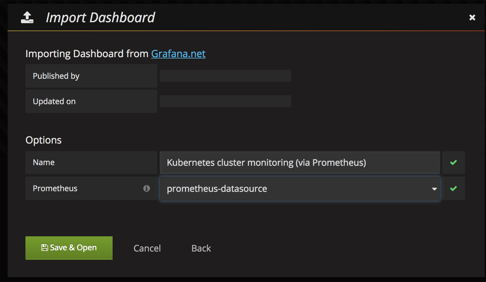
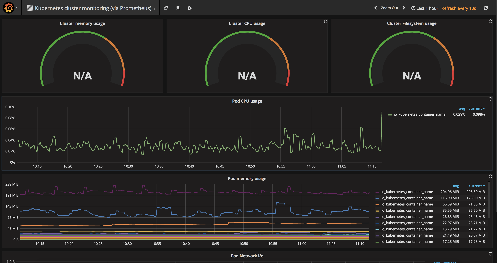

第一节 Kubernetes使用Prometheus搭建监控平台(2018)
最近在测试环境搭建了Kubernetes集群环境，一般情况下我们是直接通过Dashboard的资源统计图标进行观察的，但是很显然如果要上到生产环境，就需要更自动化的方式来对集群、Pod甚至容器进行监控了。
Kubernetes内置了一套监控方案：influxdb+grafana+heapster。我们这里使用Prometheus来完成k8s的集群监控。
1 Prometheus 简介
Prometheus是SoundCloud开源的一款开源软件。它的实现参考了Google内部的监控实现，与源自Google的Kubernetes结合起来非常合适。另外相比influxdb的方案，性能更加突出，而且还内置了报警功能。它针对大规模的集群环境设计了拉取式的数据采集方式，你只需要在你的应用里面实现一个metrics接口，然后把这个接口告诉Prometheus就可以完成数据采集了。
2 安装Prometheus
首先我们使用namespace来设置一个新的kube-ops的namespace用来管理Prometheus。(namespace.yaml)
---
apiVersion: v1
kind: Namespace
metadata:
name: kube-ops
$ kubectl create -f namespace.yaml
然后我们使用ConfigMap的形式来设置Prometheus的配置文件，如下(prometheus-config.yaml)
apiVersion: v1
kind: ConfigMap
metadata:
name: prometheus-config
namespace: kube-ops
data:
prometheus.yml: |
global:
scrape_interval: 30s
scrape_timeout: 30s
scrape_configs:
- job_name: 'prometheus'
static_configs:
- targets: ['localhost:9090']
- job_name: 'kubernetes-nodes-cadvisor'
tls_config:
ca_file: /var/run/secrets/kubernetes.io/serviceaccount/ca.crt
bearer_token_file: /var/run/secrets/kubernetes.io/serviceaccount/token
kubernetes_sd_configs:
- api_servers:
- 'https://10.254.0.1'
in_cluster: true
role: node
relabel_configs:
- action: labelmap
regex: __meta_kubernetes_node_label_(.+)
- source_labels: [__meta_kubernetes_role]
action: replace
target_label: kubernetes_role
- source_labels: [__address__]
regex: '(.*):10250'
replacement: '${1}:4194'
target_label: __address__
- job_name: 'kubernetes-apiserver-cadvisor'
tls_config:
ca_file: /var/run/secrets/kubernetes.io/serviceaccount/ca.crt
bearer_token_file: /var/run/secrets/kubernetes.io/serviceaccount/token
kubernetes_sd_configs:
- api_servers:
- 'https://10.254.0.1'
in_cluster: true
role: apiserver
relabel_configs:
- action: labelmap
regex: __meta_kubernetes_node_label_(.+)
- source_labels: [__meta_kubernetes_role]
action: replace
target_label: kubernetes_role
- source_labels: [__address__]
regex: '(.*):10250'
replacement: '${1}:10255'
target_label: __address__
- job_name: 'kubernetes-node-exporter'
tls_config:
ca_file: /var/run/secrets/kubernetes.io/serviceaccount/ca.crt
bearer_token_file: /var/run/secrets/kubernetes.io/serviceaccount/token
kubernetes_sd_configs:
- api_servers:
- 'https://10.254.0.1'
in_cluster: true
role: node
relabel_configs:
- action: labelmap
regex: __meta_kubernetes_node_label_(.+)
- source_labels: [__meta_kubernetes_role]
action: replace
target_label: kubernetes_role
- source_labels: [__address__]
regex: '(.*):10250'
replacement: '${1}:31672'
target_label: __address__
将以上配置文件保存为prometheus-config.yaml，然后执行命令：
$ kubectl create -f prometheus-config.yaml
2-1 注意：
1.其中api_servers的地址可以通过kubectl get services查看kubernetes的地址，注意https的证书路径
$ kubectl get services
NAME TYPE CLUSTER-IP EXTERNAL-IP PORT(S) AGE
kubernetes ClusterIP 10.254.0.1 <none> 443/TCP 34d
2.job_name=kubernetes-apiserver-cadvisor需要将10250端口替换成10255，10255端口是kubelet实现的metrics，可以在节点上面curl查看内容，curl http://<node_ip>:10255/metrics
3.job_name=kubernetes-nodes-cadvisor需要将10250端口替换成4194，4194同样是kubernetes集成的容器监控服务，在k8s 1.7版本之前的用10255端口即可，但是1.7版本后cadvisor监控的数据没有集成到kubelet的实现里面去了, After upgrading to 1.7.0, Kubelet no longer reports cAdvisor stats
4.job_name=kubernetes-node-exporter中替换10250的端口是31672，该端口是node-exporter暴露的NodePort端口，这里需要根据实际情况填写。
然后我们使用ServiceAccount, ClusterRole, ClusterRoleBinding 的形式来设置Prometheus的SA，如下(prometheus-sa.yaml)
apiVersion: v1
kind: ServiceAccount
metadata:
name: prometheus
namespace: kube-ops
---
apiVersion: rbac.authorization.k8s.io/v1beta1
kind: ClusterRole
metadata:
name: prometheus
namespace: kube-ops
rules:
- apiGroups: [""]
resources:
- nodes
- nodes/proxy
- services
- endpoints
- pods
verbs: ["get", "list", "watch"]
- nonResourceURLs: ["/metrics"]
verbs: ["get"]
---
apiVersion: rbac.authorization.k8s.io/v1beta1
kind: ClusterRoleBinding
metadata:
name: prometheus
namespace: kube-ops
roleRef:
apiGroup: rbac.authorization.k8s.io
kind: ClusterRole
name: prometheus
subjects:
- kind: ServiceAccount
name: prometheus
namespace: kube-ops
$ kubectl create -f prometheus-sa.yaml
部署node-exporter，为了能够收集每个节点的信息，所以我们这里使用DaemonSet的形式部署PODS：(node-exporter.yaml)
---
apiVersion: extensions/v1beta1
kind: DaemonSet
metadata:
name: node-exporter
namespace: kube-ops
labels:
k8s-app: node-exporter
spec:
template:
metadata:
labels:
k8s-app: node-exporter
spec:
containers:
- image: prom/node-exporter
name: node-exporter
ports:
- containerPort: 9100
protocol: TCP
name: http
---
apiVersion: v1
kind: Service
metadata:
labels:
k8s-app: node-exporter
name: node-exporter
namespace: kube-ops
spec:
ports:
- name: http
port: 9100
nodePort: 31672
protocol: TCP
type: NodePort
selector:
k8s-app: node-exporter
将以上文件保存为node-exporter.yaml，然后执行命令：
$ kubectl create -f node-exporter.yaml
接下来通过Deployment部署Prometheus.yaml文件如下：(prometheus-deploy.yaml)
apiVersion: extensions/v1beta1
kind: Deployment
metadata:
labels:
name: prometheus-deployment
name: prometheus
namespace: kube-ops
spec:
replicas: 1
template:
metadata:
labels:
app: prometheus
spec:
serviceAccountName: prometheus
containers:
- image: prom/prometheus:v1.0.1
name: prometheus
command:
- "/bin/prometheus"
args:
- "-config.file=/etc/prometheus/prometheus.yml"
- "-storage.local.path=/prometheus"
- "-storage.local.retention=24h"
ports:
- containerPort: 9090
protocol: TCP
volumeMounts:
- mountPath: "/prometheus"
name: data
subPath: prometheus
- mountPath: "/etc/prometheus"
name: config-volume
resources:
requests:
cpu: 100m
memory: 100Mi
limits:
cpu: 200m
memory: 1Gi
volumes:
- name: data
emptyDir: {}
- configMap:
name: prometheus-config
name: config-volume
将以上文件保存为prometheus-deploy.yaml，然后执行命令：
2-2 注意：
一定要加上 serviceAccountName: prometheus, 否则会出现在 Prometheus pod log 中:
Cannot initialize nodes collection: unable to list Kubernetes nodes; unexpected response: 403
403 Forbidden
$ kubectl create -f prometheus-deploy.yaml
3 Output Prometheus Service
3-1 option 1
把 prometheus的 pod 服务暴露出来, 用svc 把 nodeport 暴露出来(prometheus-svc.yaml):
apiVersion: v1
kind: Service
metadata:
name: prometheus
namespace: kube-ops
labels:
k8s-app: prometheus
spec:
selector:
app: prometheus
type: NodePort
ports:
- name: web
port: 9090
protocol: TCP
nodePort: 30900
$ kubectl create -f prometheus-svc.yaml

3-2 option 2
$ screen
$ POD=`kubectl get pod -l app=prometheus -n kube-ops -o go-template --template '{{range .items}}{{.metadata.name}}{{end}}'`
$ kubectl port-forward $POD 9090:9090
$ ctrl + a + d
$ curl http://localhost:9090
$ screen –ls
$ screen -XS [session # you want to quit] quit
然后用浏览器访问http://localhost:9090就可以访问到Prometheus的界面了。
3-3 option 3
在创建 cluserIP Service 之后
我这里通过ingress暴露到外网，yaml文件如下：
apiVersion: extensions/v1beta1
kind: Ingress
metadata:
name: traefik-default-ingress
annotations:
kubernetes.io/ingress.class: "traefik"
spec:
tls:
- secretName: traefik-ssl
rules:
- host: prometheus.local # 替换成你的域名
http:
paths:
- path: /
backend:
serviceName: prometheus
servicePort: 9090
将以上文件保存为prometheus-ingress.yaml，然后执行命令：
$ kubectl create -f prometheus-ingress.yaml
然后就可以通过上面 option1 : nodeport中配置的端口进行访问了，可以切换到Status下面的targets查看我们采集的数据是否正常：
$ kubectl get svc -n kube-ops
NAME TYPE CLUSTER-IP EXTERNAL-IP PORT(S) AGE
node-exporter NodePort 10.254.125.138 <none> 9100:31672/TCP 34d
prometheus NodePort 10.254.35.188 <none> 9090:30900/TCP 3h
我们可以访问 http://192.168.1.138:30900

可以根据targets下面的提示信息对采集失败的数据进行修正。
4 查询监控数据
Prometheus提供了API的方式进行数据查询，同样可以使用query语言进行复杂的查询任务，在上面的WEB界面上提供了基本的查询和图形化的展示功能。
比如查询每个POD的CPU使用情况，查询条件如下：
sum by (pod_name)( rate(container_cpu_usage_seconds_total{image!="", pod_name!=""}[1m] ) )
注意其中的pod_name和image要根据自己采集的数据进行区分。

更多的查询条件可以参考Prometheus的文档，将来也会逐步介绍，这里就不详细展开了。
这样通过在Kubernetes上部署Prometheus，在不修改集群的任何配置情况下实现了集群的基本监控功能。
Reference: Prometheus的文档
5 安装Grafana
Prometheus以及获取到了我们采集的数据，现在我们需要一个更加强大的图标展示工具，毫无疑问选择grafana。
我的 Grafana 原来已经安装过了，可以参考安装文档
同样的，在Kubernetes环境下面进行安装，yaml文件如下:
apiVersion: extensions/v1beta1
kind: Deployment
metadata:
name: grafana
namespace: kube-ops
spec:
replicas: 1
template:
metadata:
labels:
k8s-app: grafana
task: monitoring
spec:
containers:
- name: grafana
image: gcr.io/google_containers/heapster-grafana-amd64:v4.4.3
ports:
- containerPort: 3000
protocol: TCP
resources:
limits:
cpu: 200m
memory: 256Mi
requests:
cpu: 100m
memory: 100Mi
volumeMounts:
- name: ca-certificates
mountPath: /etc/ssl/certs
readOnly: true
- name: grafana-data
mountPath: /var
subPath: grafana
env:
- name: INFLUXDB_HOST
value: influxdb
- name: INFLUXDB_SERVICE_URL
value: http://influxdb.kube-ops.svc.cluster.local:8086
- name: GF_SERVER_HTTP_PORT
value: "3000"
- name: GF_AUTH_BASIC_ENABLED
value: "false"
- name: GF_AUTH_ANONYMOUS_ENABLED
value: "true"
- name: GF_AUTH_ANONYMOUS_ORG_ROLE
value: Admin
- name: GF_SERVER_ROOT_URL
# If you're only using the API Server proxy, set this value instead:
# value: /api/v1/proxy/namespaces/kube-system/services/monitoring-grafana/
value: /
volumes:
- name: ca-certificates
hostPath:
path: /etc/ssl/certs
- name: grafana-data
emptyDir: {}
---
apiVersion: v1
kind: Service
metadata:
labels:
kubernetes.io/cluster-service: 'true'
kubernetes.io/name: grafana
name: grafana
namespace: kube-ops
spec:
ports:
- port: 3000
targetPort: 3000
selector:
k8s-app: grafana
将以上文件保存为grafana.yaml，然后执行命令：
$ kubectl create -f grafana.yaml
同样的你可以选择使用kubectl port-forward把端口暴露在本地，或者用ingress将服务暴露在外网进行访问。 访问grafanaWEB界面，将我们上面的Prometheus添加到grafana数据源中去
$ kubectl get svc -n kube-system
NAME TYPE CLUSTER-IP EXTERNAL-IP PORT(S) AGE
kubernetes-dashboard NodePort 10.254.64.44 <none> 80:31042/TCP 34d
monitoring-grafana NodePort 10.254.77.179 <none> 80:30425/TCP 34d
monitoring-influxdb ClusterIP 10.254.82.61 <none> 8086/TCP 34d

然后添加我们的Dashboard，推荐使用https://grafana.com/dashboards/162，可以下载该页面的dashboard的json文件，然后直接导入到grafana中去。


但是需要注意其中的一些参数，需要根据prometheus中采集到实际数据进行填写，比如我们这里采集到容器名是name，而不是io_kubernetes_container_name,
kubernetes-pod-monitoring_rev1.json
最终展示界面如下
